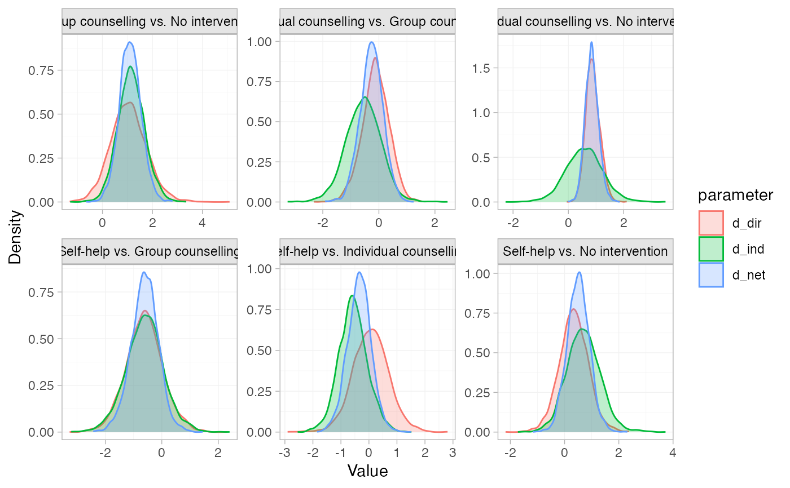
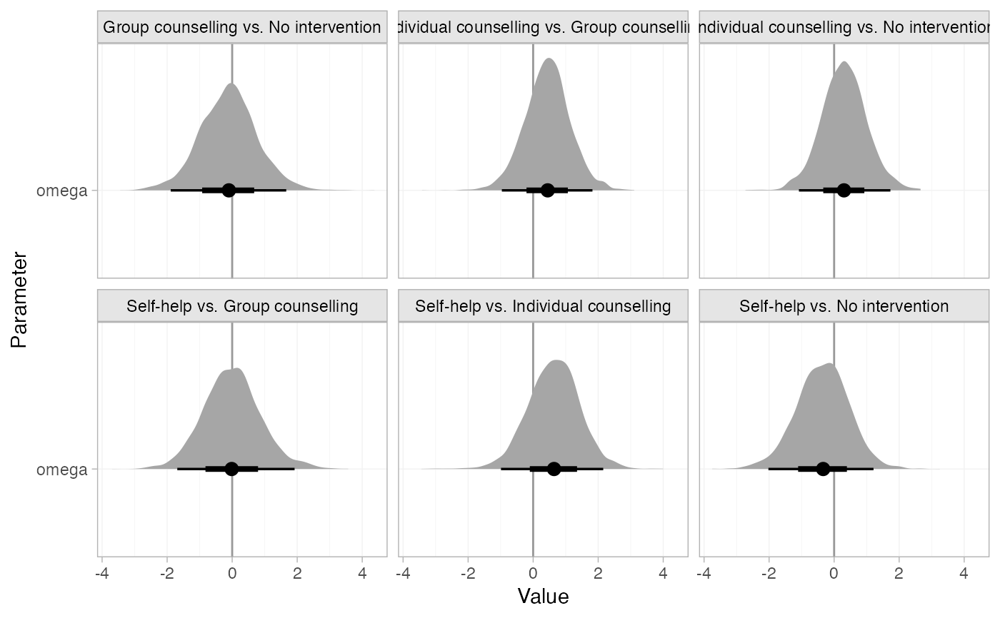

Produce summary plots of node-splitting models
Arguments
- x
A
nodesplit_summaryobject.- ...
Additional arguments passed on to the underlying
ggdistplot stat, see Details.- pars
Character vector specifying the parameters to include in the plot, choices include
"d"for the direct, indirect, and network estimates of relative effects,"omega"for the inconsistency factor, and"tau"for heterogeneity standard deviation in random effects models. Default is"d".- stat
Character string specifying the
ggdistplot stat to use. The default"dens_overlay"is a special case, producing an overlaid density plot.- orientation
Whether the
ggdistgeom is drawn horizontally ("horizontal") or vertically ("vertical"), default"horizontal".- ref_line
Numeric vector of positions for reference lines, by default no reference lines are drawn.
Details
Plotting is handled by ggplot2 and the stats and geoms provided in
the ggdist package. As a result, the output is very flexible. Any
plotting stats provided by ggdist may be used, via the argument stat.
The default "dens_overlay" is a special exception, which uses
ggplot2::geom_density(), to plot overlaid
densities. Additional arguments in ... are passed to the ggdist stat,
to customise the output.
Alternative stats can be specified to produce different summaries. For
example, specify stat = "[half]eye" to produce (half) eye plots, or stat = "pointinterval" to produce point estimates and credible intervals.
A full list of options and examples is found in the ggdist vignette
vignette("slabinterval", package = "ggdist").
A ggplot object is returned which can be further modified through the
usual ggplot2 functions to add further aesthetics, geoms, themes, etc.
Examples
# \donttest{
# Run smoking node-splitting example if not already available
if (!exists("smk_fit_RE_nodesplit")) example("example_smk_nodesplit", run.donttest = TRUE)
# }
# \donttest{
# Summarise the node-splitting results
(smk_nodesplit_summary <- summary(smk_fit_RE_nodesplit))
#> Node-splitting models fitted for 6 comparisons.
#>
#> ------------------------------ Node-split Group counselling vs. No intervention ----
#>
#> mean sd 2.5% 25% 50% 75% 97.5% Bulk_ESS Tail_ESS Rhat
#> d_net 1.10 0.43 0.28 0.82 1.10 1.38 2.00 2173 2294 1
#> d_dir 1.06 0.74 -0.27 0.54 1.02 1.54 2.60 3392 2395 1
#> d_ind 1.14 0.54 0.12 0.79 1.12 1.47 2.22 2023 2247 1
#> omega -0.08 0.90 -1.80 -0.68 -0.10 0.49 1.73 2367 2322 1
#> tau 0.85 0.20 0.54 0.71 0.83 0.96 1.30 1213 1618 1
#> tau_consistency 0.84 0.19 0.54 0.71 0.82 0.95 1.29 1184 1705 1
#>
#> Residual deviance: 54.5 (on 50 data points)
#> pD: 44.3
#> DIC: 98.8
#>
#> Bayesian p-value: 0.91
#>
#> ------------------------- Node-split Individual counselling vs. No intervention ----
#>
#> mean sd 2.5% 25% 50% 75% 97.5% Bulk_ESS Tail_ESS Rhat
#> d_net 0.84 0.24 0.40 0.68 0.83 1.00 1.35 1138 2093 1
#> d_dir 0.90 0.26 0.39 0.72 0.89 1.06 1.46 1221 1965 1
#> d_ind 0.59 0.69 -0.71 0.13 0.58 1.03 2.02 905 1342 1
#> omega 0.30 0.70 -1.13 -0.15 0.31 0.77 1.65 980 1259 1
#> tau 0.87 0.20 0.56 0.72 0.84 0.97 1.33 1156 1670 1
#> tau_consistency 0.84 0.19 0.54 0.71 0.82 0.95 1.29 1184 1705 1
#>
#> Residual deviance: 54 (on 50 data points)
#> pD: 44.2
#> DIC: 98.3
#>
#> Bayesian p-value: 0.65
#>
#> -------------------------------------- Node-split Self-help vs. No intervention ----
#>
#> mean sd 2.5% 25% 50% 75% 97.5% Bulk_ESS Tail_ESS Rhat
#> d_net 0.49 0.41 -0.30 0.23 0.48 0.76 1.30 1816 2334 1
#> d_dir 0.34 0.55 -0.73 -0.01 0.34 0.69 1.48 3896 2535 1
#> d_ind 0.70 0.66 -0.59 0.29 0.69 1.11 2.07 2569 2230 1
#> omega -0.36 0.87 -2.09 -0.91 -0.34 0.19 1.35 2533 2175 1
#> tau 0.88 0.20 0.57 0.74 0.85 0.99 1.35 1321 1948 1
#> tau_consistency 0.84 0.19 0.54 0.71 0.82 0.95 1.29 1184 1705 1
#>
#> Residual deviance: 53.6 (on 50 data points)
#> pD: 44.3
#> DIC: 97.9
#>
#> Bayesian p-value: 0.67
#>
#> ----------------------- Node-split Individual counselling vs. Group counselling ----
#>
#> mean sd 2.5% 25% 50% 75% 97.5% Bulk_ESS Tail_ESS Rhat
#> d_net -0.26 0.41 -1.10 -0.53 -0.25 0.01 0.57 2972 2852 1.00
#> d_dir -0.10 0.48 -1.05 -0.41 -0.09 0.22 0.85 3410 3052 1.00
#> d_ind -0.55 0.58 -1.72 -0.92 -0.54 -0.17 0.59 1599 2073 1.00
#> omega 0.45 0.65 -0.78 0.02 0.43 0.87 1.80 1756 2447 1.00
#> tau 0.85 0.19 0.55 0.72 0.83 0.96 1.30 1053 1588 1.01
#> tau_consistency 0.84 0.19 0.54 0.71 0.82 0.95 1.29 1184 1705 1.00
#>
#> Residual deviance: 54.2 (on 50 data points)
#> pD: 44.4
#> DIC: 98.7
#>
#> Bayesian p-value: 0.47
#>
#> ------------------------------------ Node-split Self-help vs. Group counselling ----
#>
#> mean sd 2.5% 25% 50% 75% 97.5% Bulk_ESS Tail_ESS Rhat
#> d_net -0.61 0.49 -1.58 -0.91 -0.61 -0.28 0.32 2962 2614 1
#> d_dir -0.62 0.67 -1.92 -1.06 -0.62 -0.18 0.69 3655 2727 1
#> d_ind -0.62 0.70 -2.03 -1.05 -0.62 -0.15 0.77 1703 1934 1
#> omega 0.00 0.91 -1.76 -0.60 0.00 0.59 1.80 1740 2262 1
#> tau 0.88 0.21 0.56 0.73 0.86 1.00 1.36 1170 1823 1
#> tau_consistency 0.84 0.19 0.54 0.71 0.82 0.95 1.29 1184 1705 1
#>
#> Residual deviance: 53.8 (on 50 data points)
#> pD: 44.3
#> DIC: 98.1
#>
#> Bayesian p-value: 1
#>
#> ------------------------------- Node-split Self-help vs. Individual counselling ----
#>
#> mean sd 2.5% 25% 50% 75% 97.5% Bulk_ESS Tail_ESS Rhat
#> d_net -0.35 0.42 -1.22 -0.62 -0.35 -0.08 0.47 2241 2385 1
#> d_dir 0.06 0.65 -1.22 -0.36 0.06 0.48 1.40 3532 2824 1
#> d_ind -0.61 0.53 -1.63 -0.97 -0.62 -0.26 0.42 1720 2522 1
#> omega 0.67 0.80 -0.87 0.15 0.68 1.19 2.25 2057 2872 1
#> tau 0.85 0.19 0.55 0.72 0.83 0.96 1.30 1125 2129 1
#> tau_consistency 0.84 0.19 0.54 0.71 0.82 0.95 1.29 1184 1705 1
#>
#> Residual deviance: 53.7 (on 50 data points)
#> pD: 43.9
#> DIC: 97.6
#>
#> Bayesian p-value: 0.39
# Plot the node-splitting results
plot(smk_nodesplit_summary)

# Plot the inconsistency factors instead, change the plot stat to half-eye,
# and add a reference line at 0
plot(smk_nodesplit_summary, pars = "omega", stat = "halfeye", ref_line = 0)
#> Warning: Computation failed in `stat_slabinterval()`:
#> object 'median_qi' of mode 'function' was not found
#> Warning: Computation failed in `stat_slabinterval()`:
#> object 'median_qi' of mode 'function' was not found
#> Warning: Computation failed in `stat_slabinterval()`:
#> object 'median_qi' of mode 'function' was not found
#> Warning: Computation failed in `stat_slabinterval()`:
#> object 'median_qi' of mode 'function' was not found
#> Warning: Computation failed in `stat_slabinterval()`:
#> object 'median_qi' of mode 'function' was not found
#> Warning: Computation failed in `stat_slabinterval()`:
#> object 'median_qi' of mode 'function' was not found

# Plot a comparison of the heterogeneity under the node-split models vs.
# the consistency model
plot(smk_nodesplit_summary, pars = "tau")
 # }
# }